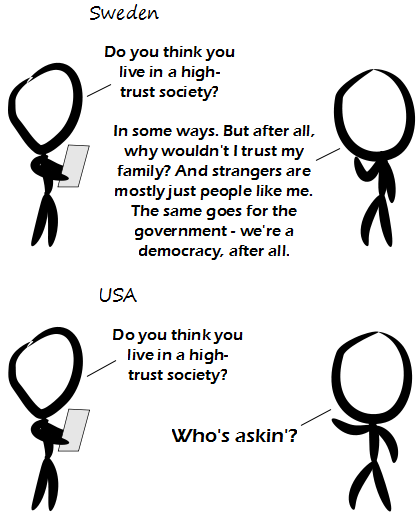

Comic JK 879
When I Feel Like It
⇤
<
?
>
⇥

⇤
<
?
>
⇥
Forum
.
RSS
.
Digg
.
Facebook
.
Reddit
.
Twitter
.
Stumbleupon
Madlib => HZZP: Hyper ____ ____ Protocol Enter your thoughts on number 879 here. Please, no spamming, trolling, phreaking, or trusting people not to do any of those things. The "Bad 1%" are in the Caymans... who wants to know? >_> <_< >_> There was a study of how the US and Canada developed their different attitudes on the government. It went back to the late 1800's. United States Americans, out in the wild west especially, felt far from the government. They felt that they, themselves, had to take care of themselves. They had the freedom and responsibility to watch themselves. The Canadians, in contrast, had the mounties who followed the people as they explored new lands, so the law of the government was more present. Even at this point in history the differing views of government was developed. "Even at this point in history" if that is late 1800's you are surely american to believe that this is history... >That's true. In Europe, due to time zone differences, 1894 is still the present day. >>In human terms, its roughly 10-12 generations, which is pretty far back. On the American Timeline its pretty far back as well. The US is only 225 years old, so that far back is a decent amount of time relatively. Especially for a trend which developed in an environment which we think of as non-existent on this continent in the present. >>>10-12 generations? (2012-1894)/12=9.83, that wouldn't have ever been a generation during the time that humans were human. My great grandmother was born in the 1890s, and if I'd had kids at the age my parents did, they just might be having kids themselves. That's six generations. >>>>I'm no historian, but I suspect there is an exponential decay to historical significance on the present. We place great store in our personal experience, and we hear firsthand from our parents and grandparents. The farther back you go, the more dilute the memory, as stories differ and context is lost. Six generations is probably enough to erase a lot of cultural memory. >>>>I think the biggest influence on American attitude towards government was a series of events in the late 18th century that culminated in a resounding "fuck you" to the British Empire. >The view is old, but the gist is that since then, nothing has really changed the distress of the government since then until the 1930's, where depression made people desperate for anything. Since then, there was an upswing in the faith and power of government in America until the 1980's, where it swung back. Just because something is old doesn't mean it is wrong unless something changed it. Poland: No. I trust most U.S. citizens to be stupid and easily manipulated by the media, their church and by their own mostly warped view >I trust that's what the media has manipulated you into thinking. >And I trust the "educated" to have a negative view of our citizens. >>No, pretty sure it's just cable news viewers have that view. I trust myself, does that count? >Who's askin'? >>He's askin'. Is that enough for you? >>>Who's askin'? >>>>Who's askin'? >>>>>Who are you and how did you get into my house? >>>>>>Are you quoting Donald Knuth? >>>>>>>Who's askin'? >>>>>>>>I'm Detective John Kimble >>>>>>>>>Any relation to Dr. Richard Kimble? >>>>>>>>>>I'm a cop, you idiot! >>>>>>>>>>>I'm an idiot, you cop! I only trust your mother enough to let her suck my dick. >You have to trust a person quite a bit to let her suck your dick. Unless she doesn't have any teeth (eugh, I don't like that mental image). >>John Bobbitt trusted Lorena